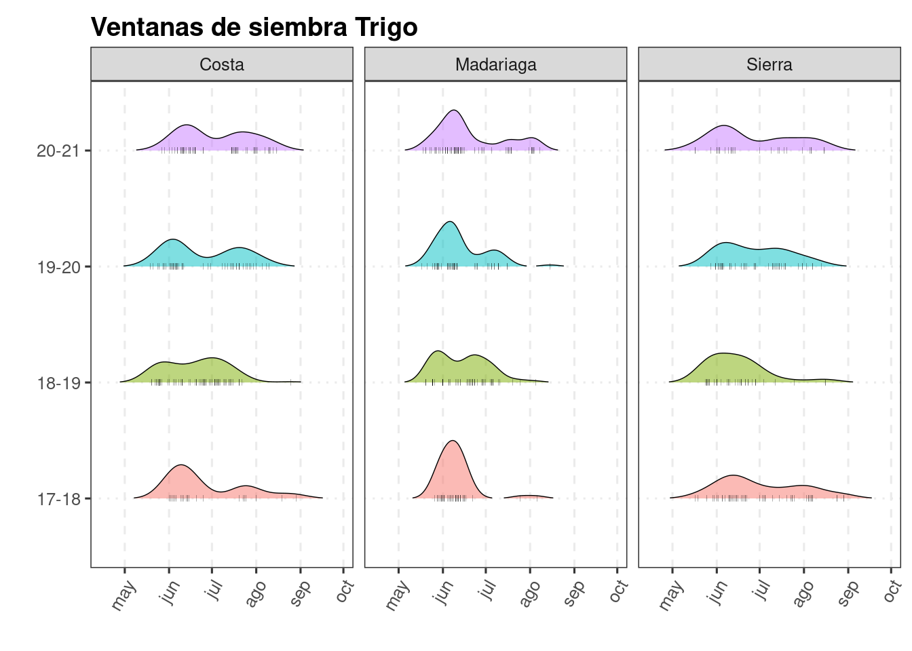
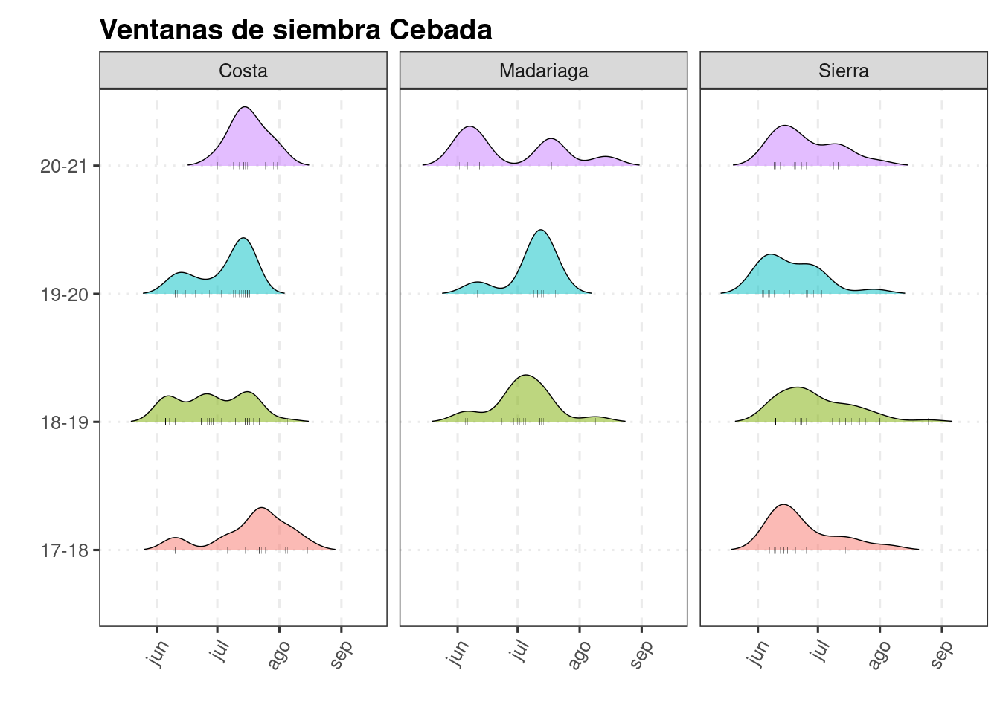
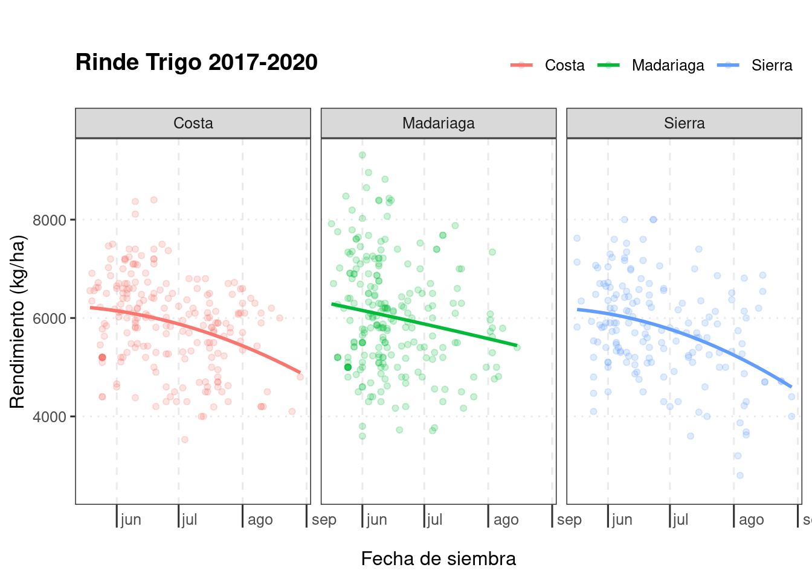
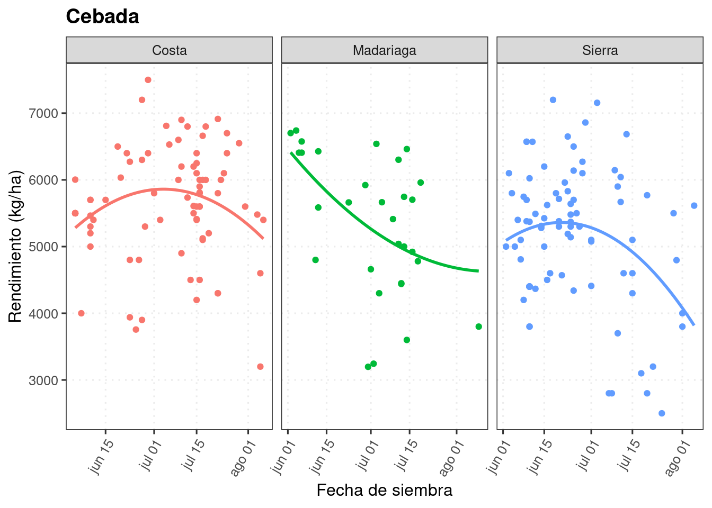
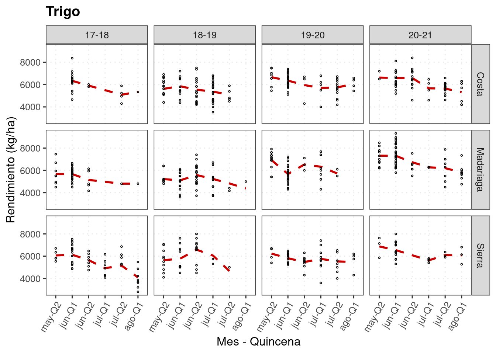
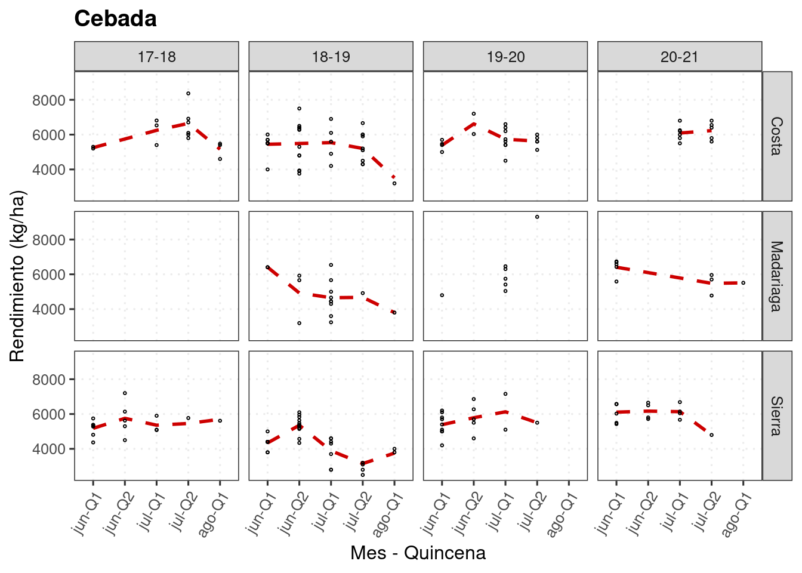
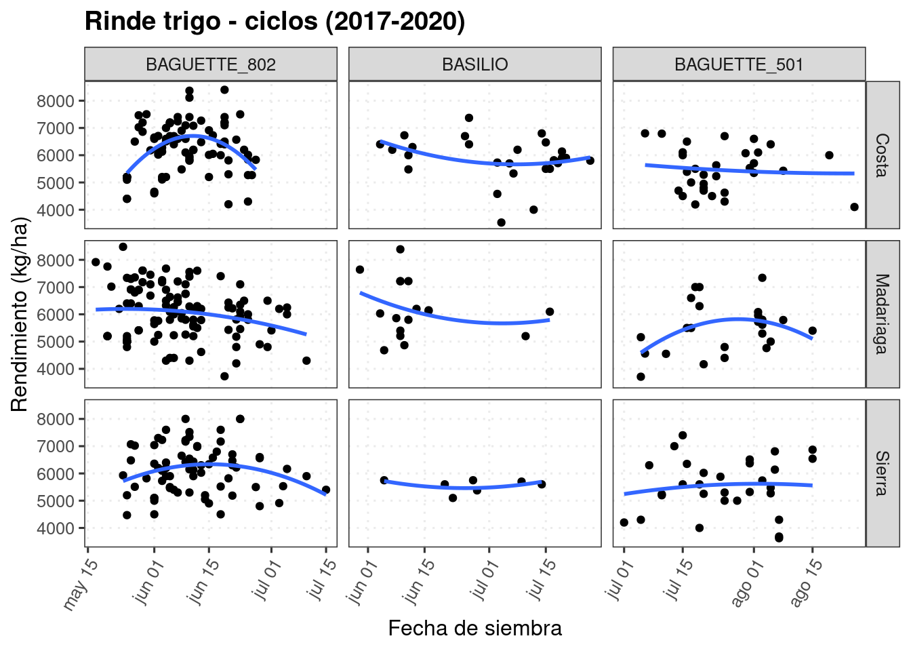
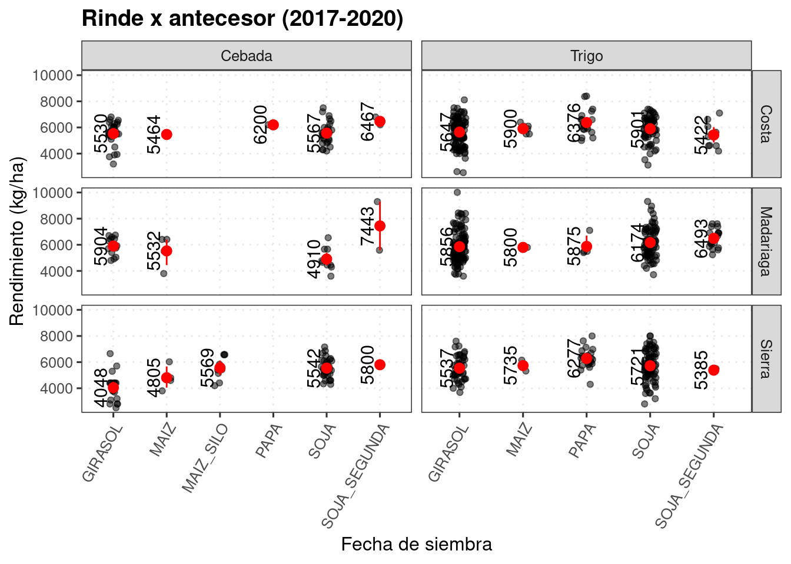

4 Manejo
knitr::opts_chunk$set(echo = TRUE, message=FALSE, warning=FALSE)
pacman::p_load(tidyverse, lubridate, scales, ggridges)
# drive_auth(email = "edwardsmolina@gmail.com")
# gs4_auth(email = "edwardsmolina@gmail.com")
source(here::here("0 themes.R"))
load(here::here("data/data.Rdata"))
# glimpse(dat)Ventanas de siembra
dat_fs <- dat %>%
filter(fecha_de_siembra_dia_mes > '2015-01-01') %>%
mutate(
year = factor(lubridate::year(as.Date(fecha_de_siembra_dia_mes))),
date = update(as.Date(fecha_de_siembra_dia_mes), year = 1))dat_fs %>%
filter(cultivo_de_cosecha == "Trigo") %>%
ggplot(aes(x = date, y = campana)) +
geom_density_ridges(aes(fill = campana),
panel_scaling = F, alpha =0.5,
jittered_points = TRUE, scale = .5, rel_min_height = .01,
point_shape = "|", point_size = 1, size = 0.25,
position = position_points_jitter(height = 0))+
guides(fill = "none")+
theme(axis.text.x = element_text(angle = 60, hjust = 1))+
facet_wrap("Zona")+
labs(x= "", y = "",
title = "Ventanas de siembra Trigo" )+
theme_aapre
ggsave(last_plot(), file = "plots/ventanas_siembra_trigo.png", width = 6, height = 5)
drive_upload(path = as_dribble("juanchi_guille/JMF_fina_2020/plots"), "plots/ventanas_siembra_trigo.png", overwrite = TRUE)dat_fs %>%
filter(cultivo_de_cosecha == "Cebada") %>%
ggplot(aes(x = date, y = campana)) +
geom_density_ridges(aes(fill = campana),
panel_scaling = F, alpha =0.5,
jittered_points = TRUE, scale = .5,
rel_min_height = .01,
point_shape = "|", point_size = 1, size = 0.25,
position = position_points_jitter(height = 0))+
# scale_x_date(date_labels = "%^b", breaks = date_breaks("1 months"), expand = c(0,0))+
guides(fill = "none")+
theme(axis.text.x = element_text(angle = 60, hjust = 1))+
facet_wrap("Zona")+
labs(x= "", y = "",
title = "Ventanas de siembra Cebada" )+
theme_aapre
ggsave(last_plot(), file = "plots/ventanas_siembra_ceb.png", width = 6, height = 5)
drive_upload(path = as_dribble("juanchi_guille/JMF_fina_2020/plots"), "plots/ventanas_siembra_ceb.png", overwrite = TRUE)# dat %>%
# drop_na(rinde) %>%
# group_by(campana, Zona, cultivo_de_cosecha) %>%
# summarise(n_lotes = n(),
# rinde_med = quantile(rinde, 0.5),
# techo = quantile(rinde, 0.95)) -> lotes
# # unique(dat$variedad)
# dat %>%
# filter(str_detect(cultivo_de_cosecha, 'Tr|Ceb')) %>%
# count(cultivo_de_cosecha, variedad) %>%
# arrange(cultivo_de_cosecha, desc(n)) #%>%
# # write_sheet(ss=jmf, sheet = "variedades")dat %>%
filter(cultivo_de_cosecha == "Trigo") %>%
filter(between(rinde, 1000, 10000)) %>%
ggplot(aes(date, rinde, color = Zona)) +
facet_wrap("Zona")+
geom_point(alpha = 0.2)+
# geom_point(aes(color = year))+
theme_dens+
geom_smooth(se = F, method = 'lm', formula = y ~ poly(x, 2)) +
labs(x = "Fecha de siembra", y = "Rendimiento (kg/ha)", col ="",
title = "Rinde Trigo 2017-2020")
ggsave(last_plot(), file = "plots/rinde_fs_trigo.png", width = 6, height = 5)
drive_upload(path = as_dribble("juanchi_guille/JMF_fina_2020/plots"), "plots/rinde_fs_trigo.png", overwrite = TRUE)dat%>%
filter(date <'1-08-12') %>%
filter(cultivo_de_cosecha %in% c("Cebada")) %>%
filter(between(rinde, 2000,7500)) %>%
ggplot(aes(date, rinde, col = Zona))+#, col =variedad)) +
facet_grid(.~Zona, scales="free_x")+
geom_point()+
theme_dens1+
geom_smooth(se = F,
method = 'lm', formula = y ~ poly(x, 2)) +
guides(col = F)+
labs(x = "Fecha de siembra", y = "Rendimiento (kg/ha)",
col ="",
title = "Cebada")
# geom_smooth(data = filter(dat_fs, Zona!="Madariaga"),
# se = F, method = 'lm', formula = y ~ poly(x, 2)) +
# # geom_smooth(data = filter(dat_fs, Zona!="Costa"),
# # se = F, method = 'lm', formula = y ~ poly(x, 1)) +
# labs(x = "Fecha de siembra", y = "Rendimiento (kg/ha)",
# col ="",
# title = "Rinde Cebada 2017-2020")ggsave(last_plot(), file = "plots/rinde_fs_ceb.png", width = 6, height = 5)
drive_upload(path = as_dribble("juanchi_guille/JMF_fina_2020/plots"), "plots/rinde_fs_ceb.png", overwrite = TRUE)dat %>%
drop_na(rinde) %>%
filter(date > as.Date("0001-05-01") &
date < as.Date("0001-08-15")) %>%
filter(between(rinde, 1000, 10000)) %>% # mutate(zona = fct_rev(zona)) %>%
mutate(month = month(fecha_de_siembra_dia_mes, label = TRUE),
day = day(fecha_de_siembra_dia_mes),
quincena = case_when(day %in% 1:15 ~ "Q1",
TRUE ~ "Q2"),
mes_q = factor(paste0(month, "-", quincena))) %>%
mutate(mes_q = reorder(mes_q, as.integer(month), .fun = identity)) %>%
droplevels() -> dat_quin
# dat_quindat_quin %>%
filter(cultivo_de_cosecha == "Trigo") %>%
ggplot(aes(x=mes_q, y=rinde))+
# geom_boxplot(fill = "steelblue", outlier.size = 0, alpha=0.5) +
geom_smooth(se = F, span = 0.8, col = "red3", linetype = 2, aes(group=1))+
facet_grid(Zona~campana)+
geom_point(pch = 21, size=0.5)+
labs(x = "Mes - Quincena", y = "Rendimiento (kg/ha)",
title = "Trigo") +
theme_dens1
ggsave(last_plot(),
file = "plots/rinde_fs_quincena_tr.png", w =6, h=5)
drive_upload(path = as_dribble("juanchi_guille/JMF_fina_2020/plots"), "plots/rinde_fs_quincena_tr.png", overwrite = TRUE)dat_quin %>%
filter(cultivo_de_cosecha == "Cebada") %>%
ggplot(aes(x=mes_q, y=rinde))+
geom_smooth(se = F, span = 0.8, col = "red3", linetype = 2, aes(group=1))+
facet_grid(Zona~campana)+
geom_point(pch = 21, size=0.5)+
labs(x = "Mes - Quincena", y = "Rendimiento (kg/ha)",
title = "Cebada") +
theme_dens1
ggsave(last_plot(),
file = "plots/rinde_fs_quincena_ceb.png", w =6, h=5)
drive_upload(path=
as_dribble("juanchi_guille/JMF_fina_2020/plots"), "plots/rinde_fs_quincena_ceb.png", overwrite = TRUE)(dat %>%
filter(variedad %in%
c("BAGUETTE_802", "BASILIO","BAGUETTE_501")) %>%
drop_na(fecha_de_siembra_dia_mes) %>%
select(Zona, fecha_de_siembra_dia_mes, variedad,rinde, campana) %>%
group_by(campana) %>% #slice_sample(n = 3) %>%
mutate(
year = factor(year(fecha_de_siembra_dia_mes)),
date = update(fecha_de_siembra_dia_mes, year = 1),
variedad = fct_relevel(variedad, "BAGUETTE_802", "BASILIO","BAGUETTE_501")) %>%
filter(!(date > '1-07-15' & variedad == "BAGUETTE_802")) %>%
filter(rinde < 10000) %>%
ggplot(aes(date, rinde)) +
facet_grid(Zona ~variedad , scales="free_x")+
geom_point()+
# geom_point(aes(color = year))+
theme_dens1+
geom_smooth(se = F, method = 'lm', formula = y ~ poly(x, 2)) +
labs(x = "Fecha de siembra", y = "Rendimiento (kg/ha)", col ="",
title = "Rinde trigo - ciclos (2017-2020)")
)
ggsave(last_plot(), file = "plots/ciclos_trigo.png", w=5, h=5)
drive_upload(path = as_dribble("juanchi_guille/JMF_fina_2020/plots"), "plots/ciclos_trigo.png", overwrite = TRUE)dat %>%
filter(str_detect(cultivo_de_cosecha, 'Tr|Ceb')) %>%
filter(!str_detect(cultivo_de_cosecha, 'Candeal')) %>%
# filter(!antecesor_estival %in% c("OTRO", NA)) %>%
filter(!str_detect(antecesor_estival, "SORGO|MAIZ_SEGUNDA|OTRO")) %>%
filter(rinde>1000) %>%
drop_na(antecesor_estival) %>%
ggplot(aes(antecesor_estival, rinde)) +
facet_grid(Zona~cultivo_de_cosecha, scales="free_x")+
geom_jitter(alpha=0.5, width = 0.1)+
stat_summary(fun.data = "mean_cl_boot", colour = "red", size = 0.5)+
stat_summary(aes(label=round(..y..,0)),
fun=mean, geom="text", size=4,vjust = -0.5, angle = 90)+
geom_smooth(se = F, method = 'lm', formula = y ~ poly(x, 2)) +
labs(x = "Fecha de siembra", y = "Rendimiento (kg/ha)", col ="",
title = "Rinde x antecesor (2017-2020)")+
theme_dens1